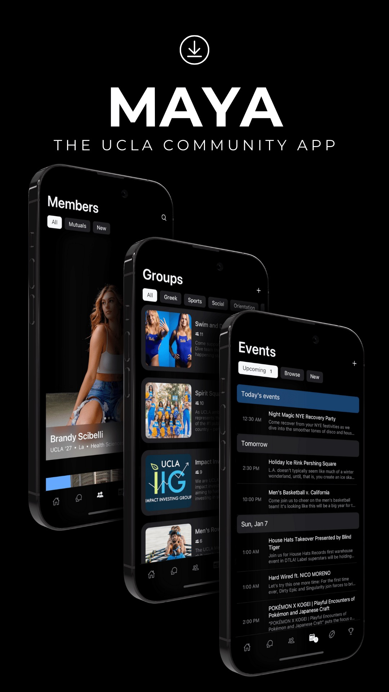
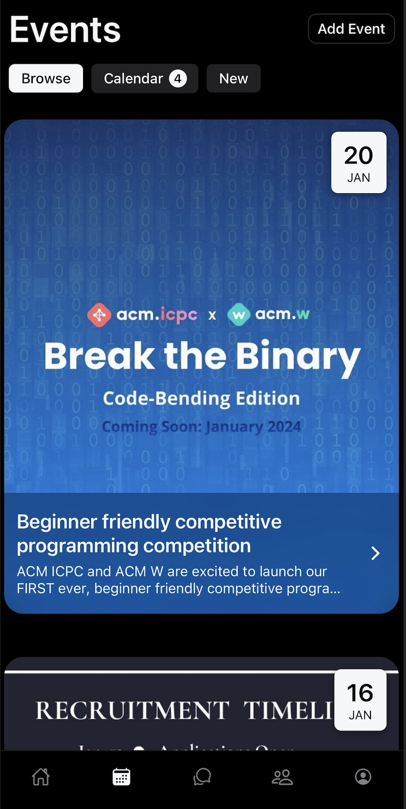

MAYA - UCLA's Social Network



About MAYA
MAYA (Me and You Always) emerged from the desire to create a digital platform dedicated to fostering genuine human connection. In a society where individualism is increasing, despite the proliferation of social media platforms, we noticed the emphasis on media and advertising have made it extremely difficult to connect with those physically around you. Our goal is to strengthen the UCLA community by providing a seamless and free platform that connects individuals, groups, and events to leave UCLA with no regrets. This empowers the student body to shape and enrich their own experiences by having access to everything around them
I started working with my co-founder, Ryan Murphy, in June 2022. We have gone through infinite feedback cycles, each encompassing product design and student feedback gathered through hundreds of informal discussions with people at the university. This iterative process has been crucial for enhancing both the user experience and our app's mission. We are committed to a human-centered design philosophy, focusing not just on logical solutions but also on understanding and incorporating the desires and behaviors of our users. Since our official launch in the summer of 2023, we have welcomed thousands of students onto our platform. Our aim is to expand throughout the entire university by the conclusion of this academic year.